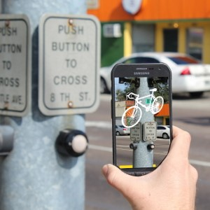
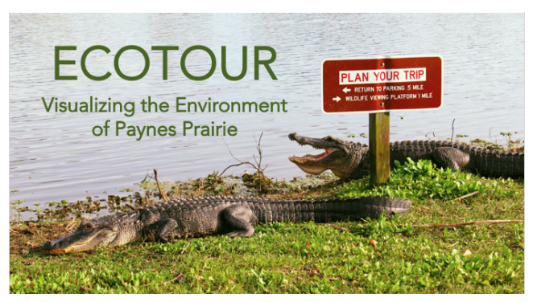
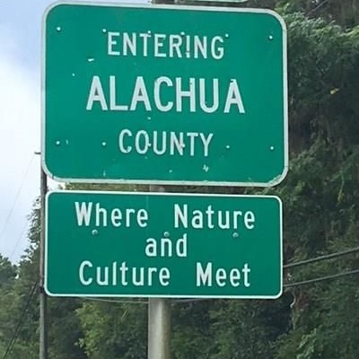

Research
My research and digital projects combine new materialist rhetoric, place-based writing, and emerging technologies both to understand the "ecological turn" in rhetoric and writing studies and to foster more community-engaged approaches to public advocacy, environmental communication, science storytelling, and information design. Specifically, my research examines the rhetorical problems of space and time presented by complexity theories (which today underpin everything from ecological science to public risk communication) and works to address these concerns through public advocacy projects which combine locative media (such as augmented reality and digital maps) with socio-historiographical writing. For example, the image on the left is from the Ghost Bikes Project, a multimedia webtext and digital humanities project which uses augmented reality (or AR) to explore the connections between large-scale issues (in this case, car-centered urban design) and local advocacy.
An important feature of all location-based technologies—such as digital maps, mobile smartphone apps, analytics, and augmented reality—scale also detaches users from a sense of individual autonomy, such as in visualizations of climate change or sea-level rise, creating a disconnect between local action and global impact. By emphasizing the place-based affordances of mobile media, my research and digital projects demonstrate how emerging technologies like augmented reality can be used to combat the problem of scale in environmental communication and to promote advocacy within local communities. Rather than approaching environmental communication through strictly top-down or bottom-up models, my work engages the place-based networks through which individuals, communities, companies, industries, and grassroots organizations advocate for environmental causes, more-than-human ethics, and sustainability.
Featured Publications
A selection of recent work, with brief abstracts, appears below. For a complete record of my academic work, visit my CV page and learn more about my teaching, digital advocacy projects, and place-based creative writing in my portfolio.
“Deep Mapping for Environmental Communication Design.” Co-authored with Shannon Butts. Communication Design Quarterly, Online First, Spring 2021.
 This article shares lessons from designing EcoTour, a multimedia environmental advocacy project in a Florida State Park, and it describes theoretical, practical, and pedagogical connections between locative media and community-engaged design. While maps can help share information about places, people, and change, they also limit how we visualize complex stories. Using deep mapping, and blending augmented reality with digital maps, EcoTour helps people understand big problems like climate change within the context of their local community. This article demonstrates the rhetorical potential of community-engaged design strategies to affect users, prompt action, and create more democratic discourse in environmental communication.
“Augmented Vélorutionaries: Digital Rhetoric, Memorials, and Public Discourse.” Co-authored with Jacob Greene. Kairos: A Journal of Rhetoric, Technology, and Pedagogy, Fall 2017, vol. 22, no. 1.
Through a place-based case study of ghost bicycles, this article examines the digital and material rhetorics used by cycling advocates in Jacksonville, Florida. Ghost bikes are repurposed bicycles put in places where cyclists have been fatally injured. These monuments function as memorials, public acknowledgement of the unspoken costs of car-centered cultural values. However, ghost bikes are temporary monuments. They are often stolen or taken down by authorities within just a few days or weeks of installation. As part of this project, we created a mobile AR experience to digitally visualize ghost bikes in the places where they have been removed.
“Writing Conditions: The Premises of Ecocomposition.” Enculturation: A Journal of Rhetoric, Writing, and Culture, Fall 2018, vol. 26, no. 1.
 This article theorizes place as an emergent network for rhetorical invention—both shaping and shaped by the act of writing—through a case study of The Devil’s Millhopper, a sinkhole in Gainesville, Florida. This location has played a significant role in media theorist Gregory L. Ulmer's early contributions to digital rhetoric. Building from Ulmer’s choric methodology, I characterize a rhetorical shift away from place as Aristotelian topos to understand place as an ecological network. I explore the relationship between specific place and commonplace in Aristotle’s rhetorical model and then turn to Ulmer’s choric invention to build a methodology for studying the ecologies of place as networks for writing.
“Sylvan Rhetorics:Roots and Branches of More-than-Human Publics.” Rhetoric Review, Fall 2018, vol. 26, no. 1 [Awarded the NCTE/CCCC 2020 Best Article on Philosophy or Theory of Technical or Scientific Communication].
Trees have instructed students of writing and rhetoric since long before Aristotle evoked them to illustrate hyle and telos. In recent times, Bruno Latour’s case study of the Amazon forest helped influence rhetoric’s new materialist turn. Trees are also remarkable exemplars of nonhuman communication networks. From the exigence of recent ecological studies of mycorrhizal networks, this article defines sylvan rhetorics through a study of trees in the field of rhetoric and writing studies, examining roots and branches of new materialist and more-than-human rhetorical theory.